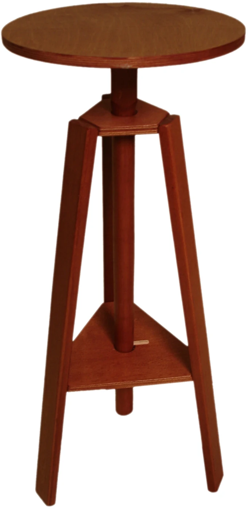

Каталог СОБСТВЕННОЕ ПРОИЗВОДСТВО
Столы скульптора
Рабочие столы с вращающейся крышкой и регулировкой высоты для занятий скульптурой.
Указаны цены за единицу. Стоимость выбранной комплектации и партии рассчитывается в карточке товара.
Столы скульптора для вашей мастерской
Рабочие столы с вращающейся крышкой и регулировкой высоты для занятий скульптурой.
Перед заказом согласуем комплектацию и условия получения. Для нестандартной задачи можно прислать размерный эскиз.
Руководство по выборуДокументы ПРАЙС-ЛИСТ
Весь ассортимент.
В одном документе.
Посмотрите модели и цены, чтобы собрать список оборудования для мастерской или учебного класса.
Открыть прайс-лист Документ откроется в Google DriveПосмотреть цены на сайтеКачество СЕРТИФИКАТ
Подтверждено
документом.
Сертификат добровольного соответствия на изделия из древесины и древесных материалов.
Срок по документу:
09.04.2025 — 08.04.2028
Давайте создадим вашу мастерскую
С чего начнётся
ваша следующая работа?
ваша следующая работа?
Расскажите о пространстве, формате и задачах.
Вместе найдём подходящее решение.